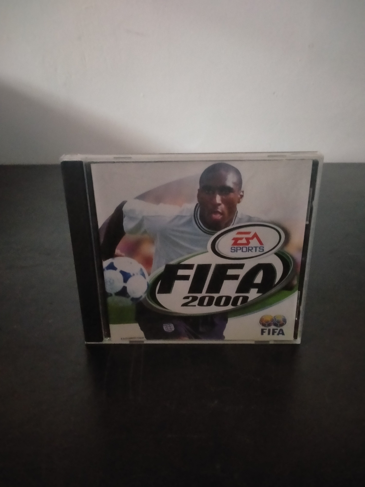

Ficha #000000
FIFA 2000
FIFA 2000 es una entrega de la serie futbolística de Electronic Arts publicada para PC en 1999. Desarrollado por EA Canada, mantiene la estructura de partidos, competiciones y gestión de alineaciones característica de la franquicia, incorporando clubes y selecciones con licencias oficiales, plantillas correspondientes a la temporada 1999-2000 y distintos modos para uno o varios jugadores. La versión para Windows utiliza gráficos tridimensionales acelerados por hardware, animaciones capturadas para los futbolistas y una presentación audiovisual inspirada en las retransmisiones televisivas. Entre sus elementos distintivos se encuentran la inclusión de equipos históricos y una mayor variedad de competiciones y opciones tácticas. Esta edición europea en caja jewel case representa el periodo de consolidación anual de EA Sports en el mercado de videojuegos deportivos para PC de finales de los años noventa.
- Formato
- Jewel Case
- Plataforma
- Win95 Win98
- Género
- Deportes Fútbol Simulación deportiva
- Serie
- Todos Jewel Case EA Sports
- Desarrollador
- EA Canada
- Distribuidor
- Electronic Arts, EA Sports
- EAN
- —
Contenido de la edición
- CD-ROM
- Manual en formato libreto
Preservación
- Protección
- SafeDisc
- Formato recomendado
- CCD/IMG/SUB
- Jugable en virtualización
- Sí
Se recomienda crear una imagen de disco que conserve la estructura física y los datos auxiliares de la protección SafeDisc, preferentemente en formato CCD/IMG/SUB. La ejecución en sistemas modernos puede requerir una máquina virtual con Windows 95/98 o una solución de compatibilidad, ya que el controlador original de SafeDisc no funciona en versiones recientes de Windows.